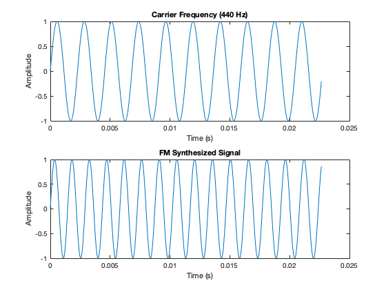

sample_rate = 44100;
duration = 2;
carrier_freq = 440;
modulating_freq = 5;
modulation_index = 50;
t = 0:1/sample_rate:duration-1/sample_rate;
carrier = sin(2 * pi * carrier_freq * t);
modulator = sin(2 * pi * modulating_freq * t);
modulated_signal = sin(2 * pi * carrier_freq * t + modulation_index * modulator);
carrier = carrier / max(abs(carrier));
modulated_signal = modulated_signal / max(abs(modulated_signal));
disp('Playing unmodulated carrier signal...');
sound(carrier, sample_rate);
pause(duration);
disp('Playing modulated FM signal...');
sound(modulated_signal, sample_rate);
figure;
subplot(2,1,1);
plot(t(1:1000), carrier(1:1000));
title('Carrier Frequency (440 Hz)');
xlabel('Time (s)');
ylabel('Amplitude');
subplot(2,1,2);
plot(t(1:1000), modulated_signal(1:1000));
title('FM Synthesized Signal');
xlabel('Time (s)');
ylabel('Amplitude');
Playing unmodulated carrier signal...
Playing modulated FM signal...
